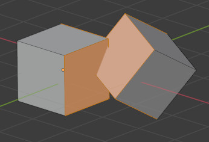
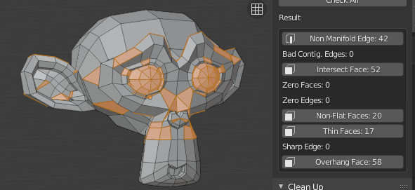

3D 打印工具箱
参考
- 类别:
网格
- 描述:
用于 3D 打印的实用工具。
- 位置:
- 文件:
object_print3d_utils 文件夹
- 作者:
Campbell Barton
安装
此插件与 Blender 捆绑在一起。
打开 Blender 并转到 “偏好设置”，然后选择 “插件” 选项卡。
选择 “网格” 然后选择 “3D打印工具箱” 以启用插件。
描述
Blender 可用于为 3D 打印创建网格模型。从 Blender 导出的网格通常导入到另一个软件中，将网格 “切片” 以生成可被 3D 打印机执行的路径。这种切片软件的一个例子是 Cura 。
为了正确对网格模型切片，网格需要 “水密”，这意味着网格表面各处封闭。此外，不应有边或面突出。3D 打印工具箱可帮助您分析网格中可能导致切片异常的问题。
选中网格模型后，可在 中找到此工具。
分析
统计信息
通过单击 “体积” 或 “表面积”，可以计算并显示网格的体积和表面积。
检查

检查面板。
可以执行许多不同的检查来分析您的网格在何种方式下可能对切片器无效。
执行其中一个检查时，“结果” 字段将显示网格的哪些部分（如果有的话）是无效的。
在 “编辑模式” 中，单击此结果将选中网格的对应这些部分。您可以使用 视图选择 反斜杠 来关注这些部分。
虽然切片器在网格的 “整洁” 方面越来越宽容，但始终值得努力提供尽可能干净的网格。
- 实体
检查非流形边和错误连续边。
边应连接到正好 2 个面。如果它只连接到 1 个面，这意味着网格中存在 1 个孔洞。更多此种情形也是不允许的。这些边被认为是非流形。如果其中一个面的法向与其相邻面不同，则其边将被标记为 “错误连续边”。
在这个屏幕截图中，左侧形状有一个洞，右侧形状有一个面翻转了。

左边，以蓝色标记：非流形边。右边，以红色标记：错误连续边。
- 交集
这两个立方体存在相交的面。在此示例中，布尔修改器将有所帮助。值得注意的是，一些切片应用程序可以处理此类问题，因此并不总是需要人为解决它。
 - 退化
面的面积或边的长度如果为 0，将被认定为 “退化”。在此示例中，立方体的顶面已缩小到0，但尚未合并。 可解决此问题。

这里有一个隐藏的面。
- 畸变
四边面或 N 边面的顶点可能折叠，使得表面不平坦。实际上，四边面很少是平坦的。导出时，这些面被转换为三角形。如果表面过度变形，可能会产生意想不到的形状。
在这个实例中，四边面已经折叠成鞍状。这将触发 “畸变” 检查。最好在这里手工进行三角化。
这个四边面可能以意想不到的方式进行三角化。
- 厚（宽）度
过薄几何形状的面可能会被切片器完全遗漏。这些面将被标记为薄面。

- 边缘锋利
类似于厚度，尖锐的边缘可能造成过薄的几何形状，被切片器遗漏
- 悬垂
由于 3D 打印机无法悬空打印，因此模型中悬垂的部分将无法被正确打印。在实践中，切片器可以添加额外的材料 “支撑”，以应对垂悬的层。
- 检查全部
一次性执行以上所有检查。在下图这个例子中，苏珊娜显示出了不少问题。这是因为眼睛是分开的部分，且结合处有孔。这使得网格非实体并且有相交。有些面则是畸变的 。

清理
- 畸变
如上所述，对被认为 “畸变” 的面进行三角化。
- 流形化
尝试解决可能使网格非流形的各种问题，例如通过修复 “坏法线”、填充孔洞以及去除空白边和面。
变换
缩放到
- 体积/音量
将模型缩放到给定的精确体积。
- 边界
缩放模型，使物体边界（或尺寸）的最大轴与给定值匹配。
导出
提供对在: 中的 Blender 对象导出操作的快速访问。